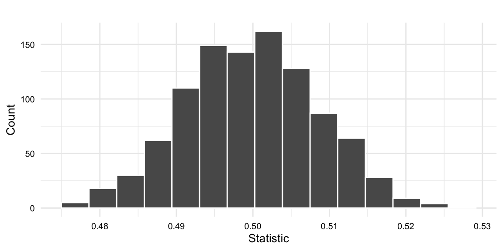
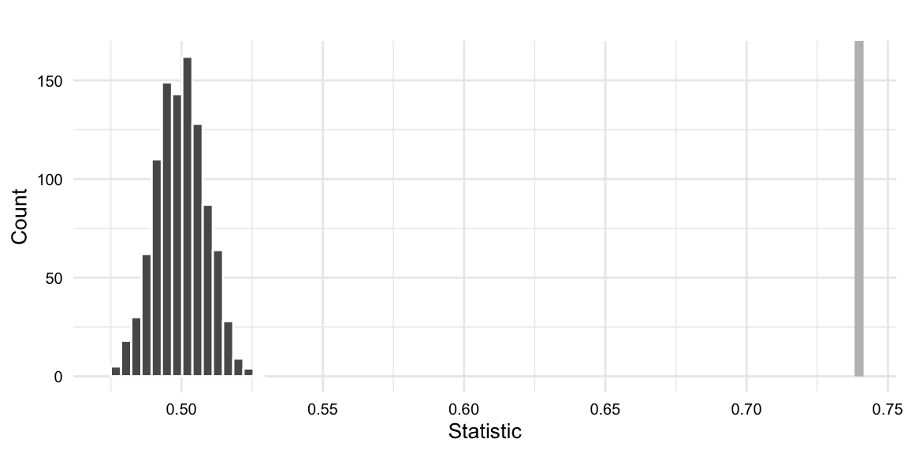
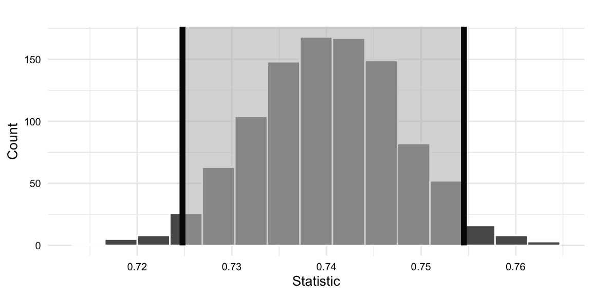
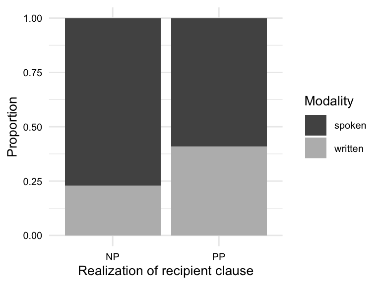
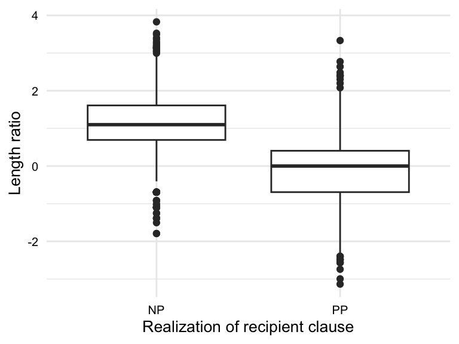
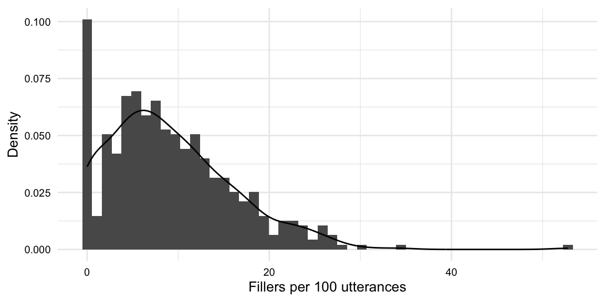
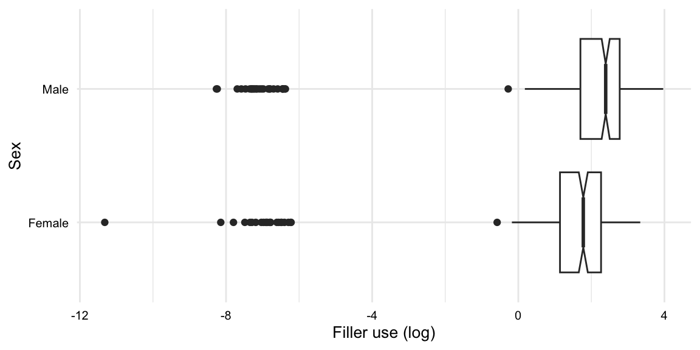
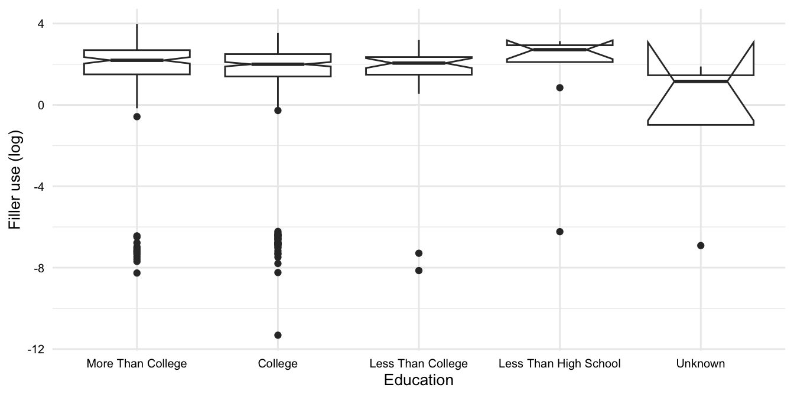
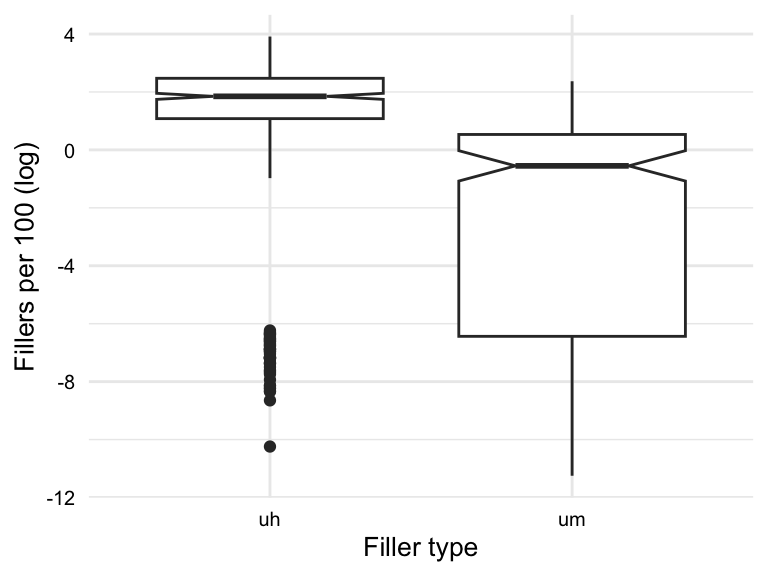
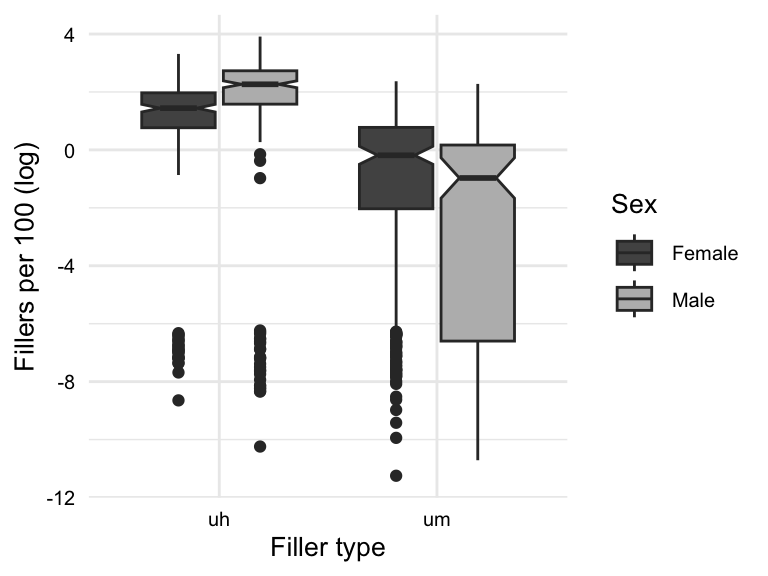

Identify the research goals of inferential data analysis
Describe the workflow for inferential data analysis
Indicate the importance of quantifying uncertainty in inferential data analysis
In this chapter, we consider approaches to deriving knowledge from information which can be generalized to the population from which the data is sampled. This process is known as statistical inference. The discussion here implements descriptive assessments, statistical tests, and evaluation procedures for a series of contexts which are common in the analysis of corpus-based data. During our treatment of these contexts, we will establish a foundational understanding of statistical inference using a simulation-based approach.
Lessons
What: Advanced Tables How: In an R console, load {swirl}, run swirl(), and follow prompts to select the lesson. Why: To explore how to enhance dataset summaries using {janitor} and present them effectively with {kableExtra}’s advanced formatting options.
10.1 Orientation
In contrast to exploratory and predictive analyses, inference is not a data-driven endeavor. Rather, the goal of inferential data analysis (IDA) is to make theoretical claims about the population and assess the extent to which the data supports those claims. This implicates two key methodological restrictions which are not in play in other analysis methods.
First, the research question and expected findings are formulated before the data is analyzed, in fact strictly speaking this should take place even before data collection. This helps ensure that the data is aligned with the research question and that the data is representative of the population and that the analysis has a targeted focus and does not run the risk of becoming a ‘just-so’ story1 or a ‘significance-finding’ mission2 both of which violate the principles of significance testing.
Second, the data used in IDA is only used once. That is to say, that the entire dataset is used a single time to statistically interrogate the relationship(s) of interest. In both EDA and PDA the data can be approached multiple times in different ways and the results of the analysis can be used to inform the next steps in the analysis. In IDA, however, the data is used to test a specific hypothesis and the results of the analysis are interpreted in the context of that hypothesis.
The methodological approach to inferential data analysis (IDA) is the most straightforward of the analysis types covered in this textbook. As the research goal is to test a claim, the steps necessary are fewer than in EDA or PDA, where the exploratory nature of these approaches includes various possible iterations. The workflow for IDA is shown in Table 10.1.
Table 10.1: Workflow for inferential data analysis
Step
Name
Description
1
Identify
Identify and map the hypothesis statement to the appropriate response and explanatory variables
2
Inspect
Assess the distribution of the variable(s) with the appropriate descriptive statistics and visualizations.
3
Interrogate
Apply the appropriate statistical procedure to the dataset.
4
Interpret
Review the statistical results and interpret them in the context of the hypothesis.
Based on the hypothesis statement, we first identify and operationalize the variables. The response variable whose variation we aim to explain. In most statistical designs, one or more explanatory variables are included in the analysis in an attempt to gauge the extent to which these variables account for the variation in the response variable. For both response and explanatory variables, it is key to confirm that your operationalization of the variables is well-defined and that the data aligns.
Consider this
What are the explanatory and/ or response variables in each of these statements? How are these variables operationalized? What key sampling features are necessary for the data to test these hypotheses?
There will be statistically significant differences in the kinds of collocations used in English dialects spoken in urban areas compared to those spoken in rural areas.
French L2 learners will make more vocabulary errors in oral production than in written production.
The association strength between Mandarin words and their English translations will be a significant predictor of translation difficulty for novice translators.
The prevalence of gender-specific words in German-speaking communities on distinct online forums will significantly reflect gender roles.
The frequency of function words used by Spanish L2 learners will be a significant predictor of their stage in language acquisition.
Next, we determine the informational values of the variables. The informational value of each variable will condition how we approach visualization, interrogation, and ultimately interpretation of the results. Note, that some informational types can be converted to other types, specifically higher-order types can be converted to lower-order types. For example, a continuous variable can be converted to a categorical variable, but not vice versa. It is preferable, however, to use the highest informational value of a variable. Simplifying data results in a loss of information –which will result in a loss of information and hence statistical power which may lead to results that obscure meaningful patterns in the data (Baayen, 2004).
With our design in place, we can now inspect the data. This involves assessing the distribution of the variables using descriptive statistics and visualizations. The goal of this step is to confirm the integrity of the data (missing data, anomalies, etc.), identify general patterns in the data, and identify potential outliers. As much as this is a verification step, it also serves to provide a sense of the data and the extent to which the data aligns with the hypothesis. This is particularly true when statistical designs are complex and involve multiple explanatory variables. An appropriate visualization provides context for interpreting the results of the statistical analysis.
Interrogating the data involves applying the appropriate statistical procedure to the dataset. In the Null Hypothesis Significance Testing (NHST) paradigm, this process includes calculating a statistic from the data, comparing it to a null hypothesis distribution, and measuring the evidence against the null hypothesis. The null hypothesis distribution is a distribution of statistic values that we would expect if the null hypothesis were true, i.e. that there is no difference or relationship between the explanatory and/ or response variables. By comparing the observed statistic to the null hypothesis distribution, we can determine the likelihood of observing the observed statistic, if the null hypothesis were true. The estimate of this likelihood is a \(p\)-value. When the \(p\)-value is below a pre-determined threshold, typically 0.05, the result is considered statistically significant. This means that the observed statistic is sufficiently different from the null hypothesis distribution that we can reject the null hypothesis.
Now let’s consider how to approach interpreting the results from a statistical test. The \(p\)-value provides a probability that the results of our statistical test could be explained by the null hypothesis. When this probability is below the threshold of 0.05, the result is considered statistically significant, otherwise we have a ‘null result’ (i.e. non-significant).
However, this sets up a binary distinction that can be problematic. On the one hand, what is one to do if a test returns a \(p\)-value of 0.051? According to standard practice these “marginally significant” results would not be statistically significant. On the other hand, if we get a statistically significant result, say a \(p\)-value of 0.49, do we move on –case closed? To address both of these issues, it is important to calculate a confidence interval for the test statistic. The confidence interval is the range of values for our test statistic that we would expect the true statistic value to fall within some level of uncertainty. Again, 95% is the most common level of uncertainty. The upper and lower bounds of this range are called the confidence limits for the test statistic.
Used in conjunction with \(p\)-values, confidence intervals can provide a more nuanced interpretation of the results of a statistical test. For example, if we get a \(p\)-value of .051, but the confidence interval is very narrow, we can be more confident that the results are reliable. Conversely, if we get a \(p\)-value of .049, but the confidence interval is very wide, we can be less confident that the results are reliable. If our confidence interval contains the null value, then even a significant \(p\)-value will require a more nuanced interpretation.
Dive deeper
Overgeneralization and undergeneralization are more formally known as Type I and Type II error, respectively. Type I error (false positive) occurs when we reject the null hypothesis when it is true. That is, we erroneously detect a significant result, when in fact the tested relationship is not borne out in the population. Type II error (false negative) occurs when we fail to reject the null hypothesis when it is false. This is a case of missing a significant result due to the limitations of the analysis which can stem from the sample size, the design of the study, or the statistical test used.
It is important to underscore that the purpose of IDA is to draw conclusions from a dataset which are generalizable to the population. These conclusions require that there are rigorous measures to ensure that the results of the analysis do not overgeneralize (suggest there is a relationship when there is not one) and balance that with the fact that we don’t want to undergeneralize (miss the fact that there is an relationship in the population, but our analysis was not capable of detecting it).
10.2 Analysis
In this section, we will discuss the practical application of inferential data analysis. The discussion will be divided into two sections based on the type of response variable: categorical and numeric. We will then explore specific designs for univariate, bivariate, and multivariate tests. We will learn and implement null significance testing using a simulation-based workflow. In contrast to theory-based methods, simulation-based methods tend to be more intuitive, easier to implement, and provide a better conceptual understanding of the statistical designs and analyses (Morris, White, & Crowther, 2019; Rossman & Chance, 2014).
The steps for implementing a simulation-based approach to significance testing are outlined in Table 10.2.
Table 10.2: Simulation-based workflow for significance testing
Step
Name
Description
1
Specify
Specify the variables of interest and their relationship
2
Calculate
Calculate the observed statistic
3
Hypothesize
Generate the null hypothesis distribution
4
Get \(p\)-value
Calculate the \(p\)-value
5
Get confidence interval
Calculate the confidence interval
{infer} (Bray et al., 2024) provides a Tidyverse-friendly framework to implement simulation-based methods for statistical inference. Designed to be used in conjunction with {tidyverse}, {infer} provides a set of functions that can be used to specify the variables of interest, calculate the observed statistic, generate the null hypothesis distribution and calculate the \(p\)-value and the confidence interval.
Let’s load the necessary packages we will use in this section, as seen in Example 10.1.
Example 10.1
# Load packageslibrary(infer) # for statistical inferencelibrary(skimr) # for descriptive statisticslibrary(janitor) # for cross-tabulation
Categorical
Here we demonstrate the application of IDA to categorical response variables. This will include various common statistical designs and analyses. In Table 10.3, we see common design scenarios, the variables involved, and the statistic used in the analysis.
Table 10.3: Statistical test designs for categorical response variables
Scenario
Explanatory variable(s)
Statistical test
infer
Univariate
-
Proportion
prop
Bivariate
Categorical
Difference in proportions
diff in props
Bivariate (>2 levels)
Categorical (3+ levels)
Chi-square
chisq
Multivariate
Categorical or Numeric (2+ variables)
Logistic regression
fit()
We will use a derived version of the dative dataset from {languageR}. It contains over 3k observations describing the realization of the recipient clause in English dative constructions. To familiarize ourselves with the dataset, let’s consider the data dictionary in Table 10.4.
Table 10.4: Data dictionary for the dative_tbl dataset.
variable
name
type
description
rcp_real
Realization of RCP
categorical
The realization of the recipient (NP/ PP)
modality
Modality
categorical
The modality of the utterance (spoken/ written)
rcp_len
Length of RCP
numeric
The length of the recipient (number of words)
thm_len
Length of THM
numeric
The length of the theme (number of words)
We see that this dataset has four variables, two categorical and two numeric. In our demonstrations we are going to use the rcp_real as the response variable, the variable whose variation we are investigating.
For a bit more context, a dative is the phrase which reflects the entity that takes the recipient role in a ditransitive clause. In English, the recipient (dative) can be realized as either a prepositional phrase (PP) as seen in Example 10.2 (1) or as a noun phrase (NP) as seen in (2).
In preparation for statistical analysis, I performed a statistical overview and diagnostics of the dataset. This included checking for missing data, outliers, and anomalies. I also checked the distribution of the variables using descriptive statistics and visualizations, noting that the rcp_len and thm_len variables are right-skewed. This is something to keep in mind. The results of this overview and diagnostics are not shown here, but they are important steps in the IDA workflow. In this process, I converted the character variables to factors as most statistical tests require factors. A preview of the dataset is shown in Example 10.4.
Example 10.4
# Preview of the datasetdative_tbl
# A tibble: 3,263 × 4
rcp_real modality rcp_len thm_len
<fct> <fct> <dbl> <dbl>
1 NP written 1 14
2 NP written 2 3
3 NP written 1 13
4 NP written 1 5
5 NP written 2 3
6 NP written 2 4
7 NP written 2 4
8 NP written 1 1
9 NP written 1 11
10 NP written 1 2
# ℹ 3,253 more rows
We can see that the dataset includes 3,263 observations. We will take a closer look a the descriptive statistics for the variables as we prepare for each analysis.
Univariate analysis
The univariate analysis is the simplest statistical design and analysis. It includes only one variable. The goal is to describe the distribution of the levels of the variable. The rcp_real variable has two levels: NP and PP. A potential research question for a case like this may aim to test the claim that:
NP realizations of the recipient clause are the canonical form in English dative constructions, and therefore will be the most frequent realization of the recipient clause.
This hypothesis can be tested using a difference in proportion test. The null hypothesis is that there is no difference in the proportion of NP and PP realizations of the recipient clause. The alternative hypothesis is that NP realizations of the recipient clause are more frequent than PP realizations of the recipient clause.
Before we get into statistical analysis, it is always a good idea to cross-tabulate or visualize the question, depending on the complexity of the relationship. In Example 10.5, we see the code the shows the distribution of the levels of the rcp_real variable in a cross-table.
Example 10.5
# Cross-tabulation of `rcp_real`dative_tbl |>tabyl(rcp_real) |>adorn_pct_formatting(digits =2) |>kable() |>kable_styling()
Table 10.5: Distribution of the levels of the rcp_real variable.
rcp_real
n
percent
NP
2414
73.98%
PP
849
26.02%
From Table 10.5, we see that the proportion of NP realizations of the recipient clause is higher than the proportion of PP realizations of the recipient clause. However, we cannot conclude that there is a difference in the proportion of NP and PP realizations of the recipient clause. We need to conduct a statistical test to determine if the difference is statistically significant.
To determine if the distribution of the levels of the rcp_real variable is different from what we would expect if the null hypothesis were true, we need to calculate the difference observed in the sample and compare it to the differences observed in many samples where the null hypothesis is true.
First, let’s calculate the proportion of NP and PP realizations of the recipient clause in the sample. We turn to the specify() function from {infer} to specify the variable of interest, step 1 in the simulation-based workflow in Table 10.2. In this case, we only have the response variable. Furthermore, the argument success specifies the level of the response variable that we will use as the ‘success’. The term ‘success’ is used because the specify() function was designed for binomial variables where the levels are ‘success’ and ‘failure’, as seen in Example 10.6.
Example 10.6
# Specify the variable of interestdative_spec <- dative_tbl |>specify(response = rcp_real,success ="NP" )# Previewdative_spec
The dative_spec is a data frame with attributes which are used by {infer} to maintain information about the statistical design for the analysis. In this case, we only have information about what the response variable is.
Step 2 is to calculate the observed statistic. The calculate() function is used to calculate the proportion statistic setting stat = "prop", as seen in Example 10.7.
Example 10.7
# Calculate the proportion statisticdative_obs <- dative_spec |>calculate(stat ="prop")# Previewdative_obs
Response: rcp_real (factor)
# A tibble: 1 × 1
stat
<dbl>
1 0.740
Note, that the observed statistic, proportion, is the same as the proportion we calculated in Table 10.5. In such a simple example, the summary statistic and the observed statistic are the same. But this simple example shows how choosing the ‘success’ level of the response variable is important. If we had chosen the ‘PP’ level as the ‘success’ level, then the observed statistic would be the proportion of PP realizations of the recipient clause. There is nothing wrong with choosing the ‘PP’ level as the ‘success’ level, but it would change the direction of the observed statistic.
Now that we have the observed statistic, our goal will be to determine if the observed statistic is different from what we would expect if the null hypothesis were true. To do this, we simulate samples where the null hypothesis is true, step 3 in our workflow.
Simulation means that we will randomly sample from the dative_tbl data frame many times. We need to determine how the sampling takes place. Since rcp_real is a variable with only two levels, the null hypothesis is that both levels are equally likely. In other words, in a null hypothesis world, NP and PP we would expect the proportions to roughly be 50/50.
To formalize this hypothesis with infer we use the hypothesize() function and set the null hypothesis to “point” and the proportion to 0.5. Then we can generate() a number of samples, say 1,000, drawn from our 50/50 world. Finally, the prop (proportion) statistic is calculated for each of the 1,000 samples and returned in a data frame, as seen in Example 10.8.
Example 10.8
# Generate the null hypothesis distributiondative_null <- dative_spec |>hypothesize(null ="point", p =0.5) |>generate(reps =1000, type ="draw") |>calculate(stat ="prop")# Previewdative_null
The result of Example 10.8 is a data frame with as many rows as there are samples. Each row contains the proportion statistic for each sample drawn from the hypothesized distribution that the proportion of NP realizations of the recipient clause is 0.5.
To appreciate the null hypothesis distribution, we can visualize it using a histogram. {infer} provides a convenient visualize() function for visualizing distributions, as seen in Example 10.9.
Example 10.9
# Visualize the null hypothesis distributiondative_null |>visualize()

Figure 10.1: Simulation-based null distribution
In Figure 10.1, we see that on the x-axis is the proportion statistic of NP realizations of the recipient clause that we would expect if the null hypothesis were true. For the 1,000 samples, the proportion statistic ranges from 0.48 to 0.52. Importantly we can appreciate that the most of the proportion statistics are around 0.5, in fact, the mean is 0.5 with a standard deviation of 0.01, which is what we would expect if the null hypothesis were true. But there is variation, as we would also expect.
Why would we expect variation? Consider the following analogy. If we were to flip a fair coin 10 times, we would expect to get 5 heads and 5 tails. But this doesn’t always happen. Sometimes we get 6 heads and 4 tails. Sometimes we get 7 heads and 3 tails, and so on. As the number of flips increases, however, we would expect the proportion of heads to be closer to 0.5, but there would still be variation. The same is true for the null hypothesis distribution. As the number of samples increases, we would expect the proportion of NP realizations of the recipient clause to be closer to 0.5, but there would still be variation. The question is whether the observed statistic we obtained from our data, in Example 10.7, is within some level of variation that we would expect if the null hypothesis were true.
Let’s visualize the observed statistic on the null hypothesis distribution, as seen in Figure 10.2, to gauge whether the observed statistic is within some level of variation that we would expect if the null hypothesis were true. The shade_p_value() function will take the null hypothesis distribution and the observed statistic and shade the sample statistics that fall within the alpha level.
Example 10.10
dative_null |>visualize() +# note we are adding a visual layer `+`shade_p_value(obs_stat = dative_obs, # the observed statisticdirection ="greater"# the direction of the alternative hypothesis )

Figure 10.2: Simulation-based null distribution with the observed statistic.
Just from a visual inspection, we can see that the observed statistic lies far away from the null distribution, far right of the right tail. No shading appears in this case as the observed statistic is far from the expected variation. This suggests that the observed statistic is not within the level of variation that we would expect if the null hypothesis were true.
Tip
The direction of the alternative hypothesis is important because it determines the \(p\)-value range. The “two-sided” direction means that we are interested in the proportion being different from 0.5. If we were only interested in the proportion of one outcome being greater than 0.5, then we would use the “greater” direction, or “less” in the opposite scenario.
But we need to quantify this. We need to calculate the probability of observing the observed statistic or a more extreme statistic if the null hypothesis were true, the \(p\)-value. Calculating this estimate is step 4 in the workflow. The \(p\)-value is calculated by counting the number of samples in the null hypothesis distribution that are more extreme than expected within some level of uncertainty. 95% is the most common level of uncertainty, which is called the alpha level. The remaining 5% of the distribution is the space where the likelihood that the null hypothesis accounts for the statistic is below This means that if the \(p\)-value is less than 0.05, then we reject the null hypothesis. If the \(p\)-value is greater than 0.05, then we fail to reject the null hypothesis.
With infer we can calculate the \(p\)-value using the get_p_value() function. Let’s calculate the \(p\)-value for our observed statistic, as seen in Example 10.11.
Example 10.11
# Calculate the $p$-value (observed statistic)dative_null |>get_p_value(obs_stat = dative_obs, # the observed statisticdirection ="greater"# the direction of the alternative hypothesis )
# A tibble: 1 × 1
p_value
<dbl>
1 0
Warning message:Please be cautious in reporting a $p$-value of 0. This result is an approximation based on the number of `reps` chosen in the`generate()` step.
The \(p\)-value for our observed statistic is reported as \(0\), with a warning that the \(p\)-value estimate is contingent on the number of samples we generate in the null distribution. 1,000 is a reasonable number of samples, so we likely have a statistically significant result at the alpha level of 0.05.
The \(p\)-value is one, traditionally very common, estimate of uncertainty. Another estimate of uncertainty is the confidence interval, our 5th and final step. The confidence interval is the range of values for our test statistic that we would expect the true statistic value to fall within some level of uncertainty. Again, 95% is the most common level of uncertainty. The upper and lower bounds of this range are called the confidence limits for the test statistic. The confidence interval is calculated by calculating the confidence limits for the test statistic for many samples from the observed data. But instead of generating a null hypothesis distribution, we generate a distribution based on resampling from the observed data. This is called the bootstrap distribution. The bootstrap distribution is generated by resampling from the observed data, with replacement, many times. This simulates the process of sampling from the population many times. Each time the test statistic is generated for each sample. The confidence limits are the 2.5th and 97.5th percentiles of the bootstrap distribution. The confidence interval is the range between the confidence limits.
In Example 10.12, we see the code for calculating the confidence interval for our observed statistic.
Let’s visualize the confidence interval for our bootstrapped samples, as seen in Example 10.13.
Example 10.13
# Visualize the bootstrap distribution with the confidence intervaldative_boot |>visualize() +shade_confidence_interval( dative_ci # the confidence interval )

Figure 10.3: Bootstrap distribution of the proportion of NP realizations of the recipient clause with the confidence interval.
The confidence level is the probability that the confidence interval contains the true value. The confidence level is typically set to 0.95 in the social sciences. This means that if the confidence interval contains the null hypothesis value, then we fail to reject the null hypothesis. If the confidence interval does not contain the null hypothesis value, then we reject the null hypothesis.
Confidence intervals are often misinterpreted. Confidence intervals are not the probability that the true value is within the range. The true value is either within the range or not. The confidence interval is the probability that the range contains the true value. This is a subtle but important distinction. Interpreted correctly confidence intervals can enhance our understanding of the uncertainty of our test statistic and reduces the interpretation of \(p\)-values (which are based on a relatively arbitrary alpha level) as a binary decision, significant or not significant. Instead, confidence intervals encourage us to think about the uncertainty of our test statistic as a range of values that we would expect the true value to fall within some level of uncertainty.
Our stat is 0.74 and the confidence interval limits are 0.725 and 0.755. The confidence interval does not contain the null hypothesis value of 0.5, which provides supports the evidence from the \(p\)-value that the proportion of NP realizations of the recipient clause is greater than 0.5.
Bivariate analysis
The univarite case is not very interesting or common in statistical inference, but it is a good place to start to understand the simulation-based process and the logic of statistical inference. The bivariate case, on the other hand, is much more common and interesting. The bivariate case includes two variables. The goal is to test the relationship between the two variables.
Using the dative_tbl dataset, we can imagine making the claim that:
The proportion of NP and PP realizations of the recipient clause are contingent on the modality.
This hypothesis can be approached using a difference in proportions test, as both variables are binomial (have two levels). The null hypothesis is that there is no difference in the proportion of NP and PP realizations of the recipient clause by modality. The alternative hypothesis is that there is a difference in the proportion of NP and PP realizations of the recipient clause by modality.
We can cross-tabulate or visualize, but let’s cross-tabulate this relationship as it is a basic 2-by-2 contingency table. In Example 10.14, we see the code for the cross-tabulation of the rcp_real and modality variables. Note I’ve made use of {janitor} to adorn this table with percentages, totals, and observation numbers.
Example 10.14
dative_tbl |>tabyl(rcp_real, modality) |># cross-tabulateadorn_totals(c("row", "col")) |># provide row and column totalsadorn_percentages("col") |># add percentages to the columnsadorn_pct_formatting(rounding ="half up", digits =0) |># round the digitsadorn_ns() |># add observation numberadorn_title("combined") |># add a header titlekable(booktabs =TRUE) |># pretty table)kable_styling()
Table 10.6: Contingency table for rcp_real and modality.
rcp_real/modality
spoken
written
Total
NP
79% (1,859)
61% (555)
74% (2,414)
PP
21% (501)
39% (348)
26% (849)
Total
100% (2,360)
100% (903)
100% (3,263)
In Table 10.6, we can appreciate that the proportion of NP realizations of the recipient clause is higher in both modalities, as we might expect from our univariate analysis. However, the proportion appears to be different with the spoken modality having a higher proportion of NP realizations of the recipient clause than the written modality. But we cannot conclude that there is a difference in the proportion of NP and PP realizations of the recipient clause by modality. We need to conduct a statistical test to determine if the difference is statistically significant.
To determine if the distribution of the levels of the rcp_real variable by the levels of the modality variable is different from what we would expect if the null hypothesis were true, we need to calculate the difference observed in the sample and compare it to the differences observed in many samples where the null hypothesis is true.
{infer} provides a pipeline, steps 1-5, which maintains a consistent workflow for statistical inference. As such, the procedure is very similar to the univarite analysis we performed, with some adjustments. Let’s focus on the adjustments. First, our specify() call needs to include the relationship between two variables: rcp_real and modality. The response argument is the response variable, which is rcp_real. The explanatory argument is the explanatory variable, which is modality.
There are two approaches to specifying the relationship between the response and explanatory variables. The first approach is to specify the response variable and the explanatory variable separately as values of the arguments response and explanatory. The second approach is to specify the response variable and the explanatory variable as a formula using the ~ operator. The formula approach is more flexible and allows for more complex relationships between the response and explanatory variables. In Example 10.15, we see the code for the specify() call using the formula approach.
Example 10.15
# Specify the relationship between the response and explanatory variablesdative_spec <- dative_tbl |>specify( rcp_real ~ modality,success ="NP" )# Previewdative_spec
Response: rcp_real (factor)
Explanatory: modality (factor)
# A tibble: 3,263 × 2
rcp_real modality
<fct> <fct>
1 NP written
2 NP written
3 NP written
4 NP written
5 NP written
6 NP written
7 NP written
8 NP written
9 NP written
10 NP written
# ℹ 3,253 more rows
The dative_spec now contains attributes about the response and explanatory variables encoded into the data frame.
We now calculate the observed statistic with calculate(), as seen in Example 10.16.
Example 10.16
# Calculate the observed statisticdative_obs <- dative_spec |>calculate(stat ="diff in props",order =c("spoken", "written") )# Previewdative_obs
Response: rcp_real (factor)
Explanatory: modality (factor)
# A tibble: 1 × 1
stat
<dbl>
1 0.173
Two differences are that our statistic is now a difference in proportions and that we are asked to specify the order of the levels of modality. The statistic is clear, we are investigating whether the proportion of NP realizations of the recipient clause is different between the spoken and written modalities. The order of the levels of modality is important because it determines the direction of the alternative hypothesis, specifically how the statistic is calculated (the order of the subtraction).
So our observed statistic 0.173 is the proportion of NP realizations of the recipient clause in the spoken modality minus the proportion of NP realizations of the recipient clause in the written modality, so the NP realization appears 17% more in the spoken modality compared to the written modality.
The question remains, is this difference statistically significant? To answer this question, we generate the null hypothesis distribution and calculate the \(p\)-value, as seen in Example 10.17.
Example 10.17
# Generate the null hypothesis distributiondative_null <- dative_spec |>hypothesize(null ="independence") |>generate(reps =1000, type ="permute") |>calculate(stat ="diff in props", order =c("spoken", "written"))# Calculate the $p$-valuedative_null |>get_p_value(obs_stat = dative_obs, # the observed statisticdirection ="two-sided"# the direction of the alternative hypothesis )
# A tibble: 1 × 1
p_value
<dbl>
1 0
Note when generating the null hypothesis distribution, we use the hypothesize() function with the null argument set to “independence”. This is because we are interested in the relationship between the response and explanatory variables. The null hypothesis is that there is no relationship between the response and explanatory variables. When generating the samples, we use the permutation approach, which randomly shuffles the response variable values for each sample. This simulates the null hypothesis that there is no relationship between the response and explanatory variables.
The \(p\)-value is reported as \(0\). To provide some context, we will generate a confidence interval for our observed statistic using the bootstrap method, as seen in Example 10.18.
Example 10.18
# Generate boostrap distributiondative_boot <- dative_spec |>generate(reps =1000, type ="bootstrap") |>calculate(stat ="diff in props", order =c("spoken", "written"))# Calculate the confidence intervaldative_ci <- dative_boot |>get_confidence_interval(level =0.95)# Previewdative_ci
The confidence interval does not contain the null hypothesis value of 0 (no difference), which provides evidence that the proportion of NP realizations of the recipient clause is different between the spoken and written modalities.
Multivariate Analysis
In many scenarios, it is common to have multiple explanatory variables that need to be considered. In such cases, logistic regression is a suitable modeling technique. Logistic regression allows for the inclusion of both categorical and continuous explanatory variables. The primary objective of using logistic regression is to assess the association between these variables and the response variable. By analyzing this relationship, we can determine how changes in the explanatory variables influence the probability of the outcome occurring.
To explore this scenario, let’s posit that:
NP and PP realizations of the recipient clause are contingent on modality and word length ratio of the recipient and theme.
The length ratio gets at the length of the recipient clause relative to the length of the theme clause. This ratio is an operationalization of a phenomenon known as ‘Heavy NP’ shift. There are many ways to operationalize this phenomenon, but the length ratio is a simple method to approximate the phenomenon. It attempts to capture the idea that the longer the theme clause is relative to the recipient clause, the more likely the recipient clause will be realized as an NP –in other words, when the theme is relatively longer than the recipient, the theme is ordered last in the sentence, and the recipient is ordered first in the sentence and takes the form of an NP (instead of a PP).
The hypothesis, then, is that Example 10.19 (2) would be less likely than (1) because the theme is relatively longer than the recipient.
Example 10.19
John gave [Mary NP] the large book that I showed you in class yesterday.
John gave the large book that I showed you in class yesterday [to Mary PP].
Let’s consider this variable length_ratio and modality together as explanatory variables for the realizations of the recipient clause rcp_real.
Let’s create the length_ratio variable by dividing the thm_len by the rcp_len. This will give us values larger than 1 when the theme is longer than the recipient. And since we are working with skewed-distributions, let’s log-transform the length_ratio variable. In Example 10.20, we see the code for creating the length_ratio variable.
Let’s visualize the relationship between rcp_real and length_ratio_log separately and then together with modality, as seen in Example 10.21.
Example 10.21
# Visualize the proportion of `rcp_real` by `modality`dative_tbl |>ggplot(aes(x = rcp_real, fill = modality)) +geom_bar(position ="fill") +labs(x ="Realization of recipient clause",y ="Proportion",fill ="Modality" )# Visualize the relationship between `rcp_real` and `length_ratio_log`dative_tbl |>ggplot(aes(x = rcp_real, y = length_ratio_log)) +geom_boxplot() +labs(x ="Realization of recipient clause",y ="Length ratio" )

(a) RCP by modality

(b) RCP by length ratio
Figure 10.4: Distribution the variables modality and length_ratio_log by the levels of the rcp_real variable.
To understand visualizations in Figure 10.4, remember the null hypothesis is that there is no difference in the proportion of NP and PP realizations of the recipient clause by modality or length ratio. On the flip side, the alternative hypothesis is that there is a difference in the proportion of NP and PP realizations of the recipient clause by modality and length ratio. From the visual inspection, it appears that NP realizations of the recipient clause are more common in the spoken modality and that the NP realizations have a higher overall length ratio (larger theme relative to recipient) than PP realizations of the recipient clause. This suggests that the alternative hypothesis is likely true, but we need to conduct a statistical test to determine if the differences are statistically significant.
Let’s calculate the statistics (not statistic) for our logistic regression by specifying the relationship between the response and explanatory variables and then using fit() to fit the logistic regression model, as seen in Example 10.22.
Example 10.22
# Specify the relationshipdative_spec <- dative_tbl |>specify( rcp_real ~ modality + length_ratio_log )# Fit the logistic regression modeldative_fit <- dative_spec |>fit()# Previewdative_fit
# A tibble: 3 × 2
term estimate
<chr> <dbl>
1 intercept -0.563
2 modalitywritten 1.01
3 length_ratio_log -1.63
Tip
The reference level in R is assumed to be the first level alphabetically, unless otherwise specified. We can override this default by using the fct_relevel() function from {forcats} (Wickham, 2023). The reason we would want to do this is to make the reference level more interpretable. In our case, we would want to make the spoken modality the reference level it allows us to estimate the difference of the proportion of NP realizations of the recipient as a positive value. Remember that in Figure 10.4 (a), the proportion of NP realizations of the recipient clause is higher in the spoken modality than in the written modality. If we were to use the written modality as the reference level, the difference would be negative. Not that we couldn’t interpret this, but working with positive integers is easier to interpret.
Note I pointed out statistics, not statistic. In logistic regression models, there the number of statistic reported depends on the number of explanatory variables. If there are two variables there will be at least three terms, one for each variable and the intercept term. If one or more variables are categorical, however, there will be additional terms when the categorical variable has three or more levels.
In our case, the modality variable has two levels, so there are three terms. The first term is the intercept term, which is the log odds of the proportion of NP realizations of the recipient clause in the written modality when the length_ratio_log is 1. The second term is the log odds of the proportion of NP realizations of the recipient clause in the spoken modality when the length_ratio_log is 1. The third term is the log odds of the proportion of NP realizations of the recipient clause when the length_ratio_log is 1 in the written modality. Notably, the spoken modality does not explicitly appear but is implicitly represented the modalitywritten term statistic. modalityspokenis used as the reference level for the modality variable.
Now let’s generate the null hypothesis distribution and calculate the \(p\)-value for each of the terms, as seen in Example 10.23.
Example 10.23
# Generate the null hypothesis distributiondative_null <- dative_spec |>hypothesize(null ="independence") |>generate(reps =1000, type ="permute") |>fit()# Calculate the $p$-valuedative_null |>get_p_value( dative_fit, # the observed statisticsdirection ="two-sided"# the direction of the alternative hypothesis )
# A tibble: 3 × 2
term p_value
<chr> <dbl>
1 intercept 0
2 length_ratio_log 0
3 modalitywritten 0
It appears that our main effects, modality and length_ratio_log, are statistically significant. Let’s generate the confidence intervals for each of the terms, as seen in Example 10.24.
The confidence intervals for the main effects, modality and length_ratio_log, do not contain the null hypothesis value of 0, which provides evidence that each of the explanatory variables is related to the proportion of NP realizations of the recipient clause.
Dive deeper
Significance tests are not the only way to evaluate the evidence for the null hypothesis. We can also quantify the effect size of each of the explanatory variables using the odds ratio to calculate the \(r\) (correlation coefficient) and \(R^2\) (coefficient of determination) values. {effectsize} (Ben-Shachar et al., 2024) provides a function logoddsratio_to_r() to calculate the \(r\) and \(R^2\) values for logistic regression models.
It can be important to use these measures to distinguish between statistically significant and practically significant results. A statistically significant result is one that is unlikely to have occurred by chance. A practically significant result is one that has a meaningful effect.
Our logistic regression model as specified considers the explanatory variables modality and length_ratio_log independently, controlling for the other explanatory variable. This is an additive model, which is what we stated in our hypothesis and represented in the formula y ~ x1 + x2.
Not all multivariate relationships are additive. We can also hypothesize an interaction between the explanatory variables. A interaction is the effect of one explanatory variable on the response variable is dependent on the other explanatory variable(s). In our case, we could have hypothesized that the effect of the length_ratio_log on the proportion of NP realizations of the recipient clause is dependent on the modality. We can specify this relationship using the formula approach, as seen in Example 10.25.
Example 10.25
# Specify the relationship between the response and explanatory variablesdative_inter_spec <- dative_tbl |>specify( rcp_real ~ modality * length_ratio_log )
Replacing the + with a * tells the model to consider the interaction between the explanatory variables. A model with an interaction changes the terms and the estimates. In Example 10.26, we see the terms for the logistic regression model with an interaction.
Example 10.26
# Fit the logistic regression modeldative_inter_fit <- dative_inter_spec |>fit()# Previewdative_inter_fit
As an exercise, consider the following research question:
NP and PP realizations of the recipient clause are contingent on modality and word length ratio of the recipient and theme, and the effect of the length ratio on the proportion of NP realizations of the recipient clause is dependent on the modality.
Follow the simulation-based process to test this hypothesis. What are the results? What are the implications of the results?
The additional term modalitywritten:length_ratio_log is the interaction term. We also see the log odds estimates have changed for the previous terms. This is because this interaction draws some of the explanatory power from the other terms. Whether or not we run an interaction model depends on our research question. Again, the hypothesis precedes the model. If we hypothesize an interaction, then we should run an interaction model. If we do not, then we should not.
Numeric
We now turn our attention to the analysis scenarios where the response variable is numeric. Just as for categorical variables, we can have univariate, bivariate, and multivariate analysis scenarios. The statistical tests for numeric variables are summarized in Table 10.7.
Table 10.7: Statistical test design for numeric response variables
Scenario
Explanatory variable(s)
Statistical test
infer
Univariate
-
Mean
mean
Bivariate
Numeric
Correlation
correlation
Bivariate
Categorical (2 levels)
Difference in means
diff in means
Bivariate
Categorical (3+ levels )
ANOVA
f
Multivariate
Numeric or Categorical (2+)
Linear regression
fit()
The dataset will will use is drawn from the Switchboard Dialog Act Corpus (University of Colorado Boulder, 2008). This dataset contains over 200k utterances from 1,155 5-minute telephone conversations and includes information about the use of fillers in the conversations. The data dictionary is found in Table 10.8.
Table 10.8: Data dictionary for the transformed SWDA dataset
variable
name
type
description
speaker_id
Speaker ID
numeric
Unique identifier for each speaker
age
Age
numeric
Age of the speaker in years
sex
Sex
categorical
Gender of the speaker
education
Education
ordinal
Level of education attained by the speaker
fillers_orf
Fillers per 100
numeric
Number of filler words used per 100 utterances (observed relative frequency)
total_fillers
Total Fillers
numeric
Total number of filler words used
total_utts
Total Utterances
numeric
Total number of utterances made by the speaker
We see the dataset has seven variables. The fillers_orf will be used as our reponse variable and corresponds to the rate of filler usage per speaker, normalized by the number of utterances. The other variables we will consider as explanatory variables are age, sex, and education, providing us a mix of numeric and categorical variables.
The context for these analysis demonstrations comes from the socio-linguistic literature on the use of filled pauses. Filled pauses have often been associated with a type of disfluency; speech errors that occur during speech production. However, some authors have argued that filled pauses can act as sociolinguistic markers of socio-demographic characterstics of speakers, such as gender, age, and educational level (Shriberg, 1994; Tottie, 2011).
Reading the dataset and performing some basic diagnostics, a preview of the fillers_tbl dataset is seen in Example 10.27 .
Example 10.27
# Preview the datasetfillers_tbl
# A tibble: 441 × 4
age sex education fillers_orf
<dbl> <fct> <ord> <dbl>
1 38 Female Less Than College 2.14
2 52 Male More Than College 25.3
3 29 Female College 4.13
4 34 Female College 2.41
5 36 Female College 3.79
6 27 Female College 0
7 53 Female Less Than College 8.33
8 60 Male Less Than College 1.82
9 28 Female College 5.22
10 35 Female College 6.23
# ℹ 431 more rows
Our fillers_tbl dataset has 441 observations. Again, we will postpone more specific descriptive statistics for treatment in the upcoming scenarios.
Univariate analysis
In hypothesis testing, the analysis of a single variable is directed at determining whether or not the distribution or statistic of the variable differs from some expected distribution or statistic. In the case of a single categorical variable with two levels (as Section 10.2.1), we sampled from a binomial distribution by chance. In the case of a single numeric variable, we can sample and compare the observed distribution to a theoretical distribution. When approaching hypothesis testing from a theoretical perspective, it is often necessary to assess how well a numeric variable fits the normal distribution as many statistical tests assume that the data are normally distributed. However, we have adopted the simulation-based approach to hypothesis testing, which does not require that the data fit the normal distribution, or any other distribution for that matter.
The other approach to analyzing a single numeric variable is to compare an observed statistic to an expected statistic. This approach requires a priori knowledge of the expected statistic. For example, imagine we are interested testing the hypothesis that the length of words in a medical corpus tend to be longer than the average length of words in English. We would then calculate the observed mean for the length of words in the medical corpus and then generate a null distribution of means for the length of words in English, as in Example 10.28.
Example 10.28
# Observed meanobs_mean <- medical_df |>specify(response = word_length) |>calculate(stat ="mean")# Null distribution of meansnull_mean <- medical_df |>specify(response = word_length) |>hypothesize(null ="point", mu =5) |>generate(reps =1000, type ="draw") |>calculate(stat ="mean")
Note that instead of a p = argument, as was used in the hypothesize() step to generate a null distribution of proportions, we use a mu = argument in Example 10.28 to specify the expected mean. The rest of the hypothesis testing workflow is the same as for the null distribution of proportions.
Dive deeper
The mean mu is not the only statistic we can specify for a numeric variable. We can also specify the median med, or the standard deviation sigma.
In our case, we do not have a priori knowledge of the expected statistic for the fillers_orf variable, so we will not pursue this approach. However, it is useful to take a closer look at the distribution of a numeric variable in order to detect extreme skewing and/ or outliers. This is important because the presence of skewing and outliers can affect the results of statistical tests. We can visualize the distribution of the fillers_orf variable using a histogram and density plot, as seen in Figure 10.5.
Example 10.29
# Histogram-density plotfillers_tbl |>ggplot(aes(x = fillers_orf)) +geom_histogram(aes(y =after_stat(density)), bins =50) +geom_density() +labs(x ="Fillers per 100 utterances", y ="Count")

Figure 10.5: Histogram and density plot of the fillers_orf variable
The distribution of fillers_orf is indeed skewed to the right. We might have predicted this given that we are working with ratio based on count data, perhaps not. In any case, the skewing we observe tends to compress the distribution and may make it difficult to see any patterns. To mitigate this, we can log transform the variable. But we will run into a problem if we have any speakers who do not use any fillers at all as these speakers will have a value of zero, as we can see in Figure 10.5. The log of zero is undefined. So we need to address this.
Eliminating the speakers who do not use any fillers at all is one option. This is quite extreme as we may lose quite a few speakers and it is not clear that removing data in this way will not cause inordinate bias in the results as these speakers may be different in some way from the rest of the speakers. Looking at the speakers with zero fillers in Example 10.30, we can see that there is some potential for bias as the speakers with zero fillers are not evenly distributed across the levels of the education and sex variables.
Example 10.30
# Cross-tabulation of zero fillers by education and sexfillers_tbl |>filter(fillers_orf ==0) |>tabyl(education, sex)
education Female Male
More Than College 3 14
College 16 11
Less Than College 2 0
Less Than High School 1 0
Unknown 1 0
Another approach is to add a small value to the fillers_orf variable, for all speakers. This will allow us to log transform the variable and will likely not have any (or very little) impact on the results. It also allows us to keep these speakers.
Adding values can be done in one of two ways. We can add a small constant value to all speakers, or we can add a small random value to all speakers. The former is easier to implement, but means that we will still have a spike in the distribution at the value of the constant. Since we do not expect that speakers that did not use fillers at all would never do so and that when they do we would not expect them to be at exactly the same rate as other speakers, we can add a small random value to all speakers.
In R, we can use the jitter() function to add a small amount of random noise to the variable. Note, however, this random noise can be positive or negative. When a negative value is added to a zero value, we are still in trouble when we go to log-transform. So we need to make sure that none of the jitter produces negative values. We can do this by simply taking the absolute value of the jittered variable with the abs() function. Let’s see how this works in Example 10.31.
Example 10.31
# Set seed for reproducibilityset.seed(1234)# Add jitter to fillersfillers_tbl <- fillers_tbl |>mutate(fillers_orf_jitter =abs(jitter(fillers_orf)))fillers_tbl
# A tibble: 441 × 5
age sex education fillers_orf fillers_orf_jitter
<dbl> <fct> <ord> <dbl> <dbl>
1 38 Female Less Than College 2.14 2.14
2 52 Male More Than College 25.3 25.3
3 29 Female College 4.13 4.13
4 34 Female College 2.41 2.41
5 36 Female College 3.79 3.80
6 27 Female College 0 0.000561
7 53 Female Less Than College 8.33 8.33
8 60 Male Less Than College 1.82 1.82
9 28 Female College 5.22 5.22
10 35 Female College 6.23 6.23
# ℹ 431 more rows
The results from Example 10.31 show that the fillers_orf_jitter variable has been added to the fillers_tbl dataset and that zero values for fillers_orf now have a small amount of random noise added to them. Note, that the other values also have a small amount of random noise added to them, but it is so small that rounding to 2 decimal places makes it look like nothing has changed.
Now let’s return to log transforming the fillers_orf_jitter variable. We can do this with the log() function. Let’s see how this works in Example 10.32.
# A tibble: 441 × 6
age sex education fillers_orf fillers_orf_jitter fillers_orf_log
<dbl> <fct> <ord> <dbl> <dbl> <dbl>
1 38 Female Less Than College 2.14 2.14 0.762
2 52 Male More Than College 25.3 25.3 3.23
3 29 Female College 4.13 4.13 1.42
4 34 Female College 2.41 2.41 0.880
5 36 Female College 3.79 3.80 1.33
6 27 Female College 0 0.000561 -7.49
7 53 Female Less Than College 8.33 8.33 2.12
8 60 Male Less Than College 1.82 1.82 0.597
9 28 Female College 5.22 5.22 1.65
10 35 Female College 6.23 6.23 1.83
# ℹ 431 more rows
Let’s now plot the log-transformed variable, as seen in Example 10.33.
Example 10.33
# Histogram-density plotfillers_tbl |>ggplot(aes(x = fillers_orf_log)) +geom_histogram(aes(y =after_stat(density)), bins =50) +geom_density() +labs(x ="Fillers per 100 utterances", y ="Count")
Figure 10.6: Histogram and density plot of the fillers_orf_log variable
The distribution of the log-transformed variable is more spread out now, but the zero-filler speakers do show a low-level spike in the left tail of the distribution. Jitter and log-transformation, however, smooth over their effect to a large degree.
Bivariate analysis
When considering a numeric reponses variable and another variable, it is key to consider the nature of the other variable. If it is a categorical variable with two levels, then we can compare a statistic between the two groups (mean or median). If it is categorical with more than two levels, the F statistic is used to compare the means. Finally, if it is a numeric variable, then we can use a correlation test to see if there is an association between the two variables.
The fillers_tbl contains the sex variable which is a categorical variable with two levels. According to the literature, filled pauses are associated with differences between men and women Tottie (2014). Sex is one of the variables associated with the rate of filled pauses. The findings suggest that men use fillers at a higher rate than women. Let’s test to see if this holds for the SWDA data.
Let’s first explore the distribution from a descriptive point of view. With a numeric response variable fillers_orf_log and a categorical explanatory variable sex, a boxplot is a natural fit, as seen in Example 10.34.
Example 10.34
# Boxplotfillers_tbl |>ggplot(aes(x = fillers_orf_log, y = sex)) +geom_boxplot(notch =TRUE) +labs(x ="Filler use (log)",y ="Sex" )

Figure 10.7: Boxplot of the fillers_orf_log variable by sex
Looking at the boxplot in Figure 10.7, we see that the appears to be an overall higher rate of filler use for men, compared to women. We also can see that the random noise added to zero-rate speakers appear as outliers in the left tail. Since I added a notch to the boxplots, we can also gauge to some degree the uncertainty of the median. The notches do not overlap, which suggests that the medians are different.
To test this differences, let’s follow the simulation-based hypothesis testing workflow and investigate if the apparent difference between men and women is statistically significant, or expected by chance3. The first steps are found in Example 10.35.
Example 10.35
# Specify the relationshipfillers_spec <- fillers_tbl |>specify(fillers_orf_log ~ sex) # response ~ explanatory# Observed statisticfillers_obs <- fillers_spec |># diff in means, Male - Femalecalculate(stat ="diff in means", order =c("Male", "Female"))# Null distributionfillers_null <- fillers_spec |>hypothesize(null ="independence") |># independence = no relationshipgenerate(reps =1000, type ="permute") |># permute = shufflecalculate(stat ="diff in means", order =c("Male", "Female"))# Calculate the $p$-valuefillers_null |>get_p_value(obs_stat = fillers_obs, direction ="greater")
# A tibble: 1 × 1
p_value
<dbl>
1 0.033
From the analysis performed in Example 10.35, we can reject the null hypothesis that there is no difference between the rate of filler use between men and women, as the \(p\)-value is less than 0.05.
To further assess the uncertainty of the observed statistic, and the robustness of the difference, we calculate a confidence interval, as seen in Example 10.36.
Example 10.36
# Resampling distributionfillers_boot <- fillers_spec |>generate(reps =1000, type ="bootstrap") |>calculate(stat ="diff in means", order =c("Male", "Female"))# Calculate the confidence intervalfillers_ci <- fillers_boot |>get_ci(level =0.95)fillers_ci
The confidence interval includes 0, which suggests that the observed difference is questionable. It is of note, however, that the majority of the interval is above 0, which provides some evidence that the observed difference is not due to chance. This result highlights how \(p\)-values and confidence intervals together can provide a more nuanced picture of the data.
The second bivariate scenario we can consider is when the explanatory variable is categorical with more than two levels. In this case, we can use the F statistic to compare the means of the different levels. The education variable in the fillers_tbl dataset is a categorical variable with five levels. Tottie (2011) suggests that more educated speakers use more fillers than less educated speakers. Let’s test this hypothesis.
First, we visualize the distribution of the fillers_orf_log variable by education, as seen in Example 10.37.
Example 10.37
# Boxplotfillers_tbl |>ggplot(aes(y = fillers_orf_log, x = education)) +geom_boxplot(notch =TRUE) +labs(y ="Filler use (log)",x ="Education" )

Figure 10.8: Visualizations of the fillers_orf_log variable by education
The boxplot in Figure 10.8 does not point to any obvious differences between the levels of the education variable. There are a fair number of outliers, however, in the two most educated groups. These outliers are likely due to the random noise added to the 0-rate speakers and it is interesting that they are concentrated in the two most educated groups.
Let’s now submit these variables to the simulation-based hypothesis testing workflow to quantify the uncertainty of the observed statistic and determine if the observed difference is statistically significant. Again, the first steps are found in Example 10.38.
Example 10.38
# Specify the relationshipfillers_spec <- fillers_tbl |>specify(fillers_orf_log ~ education) # response ~ explanatory# Observed statisticfillers_obs <- fillers_spec |>calculate(stat ="F") # F = variance between groups / variance within groups# Null distributionfillers_null <- fillers_spec |>hypothesize(null ="independence") |># independence = no relationshipgenerate(reps =1000, type ="permute") |># permute = shufflecalculate(stat ="F")# Calculate the $p$-valuefillers_null |>get_p_value(obs_stat = fillers_obs, direction ="two-sided")
# A tibble: 1 × 1
p_value
<dbl>
1 0.426
The analysis in Example 10.38 suggests that the observed difference between the means of the different levels of the education variable not significantly different from what we would expect by chance.
Warning
The \(p\)-value in Example 10.38 was calculated using a two-sided test, which is appropriate when the expected directionality is not known. In this case, while we do have an expected directionality, the visualizations strongly suggest that the observed difference is not in line with our expectations. To account for this uncertainty and to be conservative, we choose to use a two-sided test. This allows us to remain open to the possibility that the observed difference may actually be in the opposite direction, rather than solely focusing on our initial expectation. However, it’s important to note that the decision to use a two-sided test should also consider factors such as the specific research question and the context of the analysis.
Let’s now calculate a confidence interval to assess the uncertainty of the observed statistic, as seen in Example 10.39.
Example 10.39
# Resampling distributionfillers_boot <- fillers_spec |>generate(reps =1000, type ="bootstrap") |>calculate(stat ="F")# Calculate the confidence intervalfillers_ci <- fillers_boot |>get_ci(level =0.95)fillers_ci
In Example 10.39, we see that we are in the opposite situation to the previous bivariate case –the \(p\)-value is not significant and but the confidence interval does not include 0.
So how do we interpret this? Remember, the \(p\)-value is the probability of observing a statistic as extreme or more extreme than the observed statistic, given that the null hypothesis is true. The confidence interval is the range of values that we are 95% confident contains the true population parameter. We should take into consideration two aspects: (1) the confidence interval has a large range (the interval is wide) and (2) that the lower limit is near 0. Take together and in addition to the \(p\)-value, we can conclude that the observed difference is not statistically significant, and if there is a difference, it is likely to be small or negligible.
Multivariate analysis
While bivariate analysis is useful for exploring the relationship between two variables, it is often the case that we want to consider relationships between more than two variables. In this case, we can use multivariate analysis. Linear regression is a common multivariate analysis technique.
In linear regression, we are interested in predicting the value of a numeric response variable based on the values of the explanatory variables. The contribution of the explanatory variables can be considered individually, as an interaction, or as a combination of both.
Let’s now introduce a variation of the SWDA dataset which includes a variable filler_type which has two levels, ‘uh’ and ‘um’, corresponding to the use of each filler. Here’s a preview of the dataset in Example 10.40.
Example 10.40
fillers_type_df
# A tibble: 882 × 6
speaker_id sex education age filler_type fillers_orf_log
<dbl> <fct> <ord> <dbl> <chr> <dbl>
1 1000 Female Less Than College 38 uh 0.561
2 1000 Female Less Than College 38 um -0.941
3 1001 Male More Than College 52 uh 3.22
4 1001 Male More Than College 52 um -1.64
5 1002 Female College 29 uh 0.956
6 1002 Female College 29 um 0.425
7 1004 Female College 34 uh 0.474
8 1004 Female College 34 um -0.220
9 1005 Female College 36 uh 1.17
10 1005 Female College 36 um -0.582
# ℹ 872 more rows
The fillers_type_df dataset has 882 observations and 6 variables. With this dataset, we will explore the hypothesis that the rate of filler use varies by the type of filler across the socio-demographic variable sex.
To do this we will use R formula syntax to specify the variables we want to include in the model and their relationships. The possible relationships appear in Table 10.9.
Table 10.9: Possible relationships in a multivariate analysis
Relationship
Formula
Description
Simple effects
response ~ explanatory_1 + explanatory_2
The response variable as a function of each explanatory variable
Interaction effects
response ~ explanatory_1:explanatory_2
The response variable as a function of the interaction between the two explanatory variables
Simple and interaction effects
response ~ explanatory_1 * explanatory_2
The response variable as a function of each explanatory variable and the interaction between the two explanatory variables
Our hypothesis is that men and women differ in the rates that they use the filler types. This describes an interaction, so we can use either the interaction or the simple and interaction effects relationships. To demonstrate the difference between simple and interaction terms, let’s approach this using the third relationship (i.e.fillers_orf_log ~ filler_type * sex).
A plot will help us begin to understand the potential relationships. In Example 10.41, we use a boxplot to visualize the relationship between the fillers_orf_log variable and the filler_type variable, with a sex overlay.
Example 10.41
# Boxplot `filler_type`fillers_type_df |>ggplot(aes(y = fillers_orf_log, x = filler_type)) +geom_boxplot(notch =TRUE) +labs(x ="Filler type",y ="Fillers per 100 (log)" )# Boxplot `filler_type` and `sex`fillers_type_df |>ggplot(aes(y = fillers_orf_log, x = filler_type, fill = sex)) +geom_boxplot(notch =TRUE) +labs(x ="Filler type",y ="Fillers per 100 (log)",fill ="Sex" )

(a) Boxplot by filler_type

(b) Boxplot by filler_type and sex
Figure 10.9: Boxplot of the fillers_orf_log variable by filler_type and sex
Let’s interpret the boxplots in Figure 10.9. Focusing on Figure 10.9 (a) first, we see that the filler ‘uh’ is more frequent than ‘um’ as the median is distinct and the confidence intervals do not overlap. Now, looking at Figure 10.9 (b), we see the same distinction between ‘uh’ and ‘um’, but we also see that the difference between the use of ‘uh’ and ‘um’ is different for males and females. This is the interaction effect we hypothesized. In this case the interaction effect goes in the same direction but the magnitude of the difference is different. The upshot, men and women both use ‘uh’ more than ‘um’ but men are even more likely to use ‘uh’ over ‘um’ than women.
Let’s test this effect using the infer workflow. Calculating the observed statistics for the simple and interaction effects is very similar to other designs, except instead of calculate() to derive our statistics we will use the fit() function, just as we did for logistic regression. Let’s go ahead calculate the observed statistics first, as seen in Example 10.42.
The terms in the output from Example 10.42 provide information as to what the reference levels are. For example, filler_typeum tells us that the ‘uh’ level is the reference for filler_type and by the same logic, ‘Female’ is the reference for sex. These terms provide our simple effect statistics. Each can be understood as the difference between the reference level when the other variables are held constant. Our response variable is log transformed, so it is not directly interpretable beyond the fact that smaller units are lower rates of filler use and larger units are higher rates of filler use. So ‘um’ is used less than ‘uh’ and men use more fillers than women.
The interaction term fillertypeum:sexMale is the difference in the rate of fillers for this combination compared to the reference level combination (‘uh’ and ‘Female’). In this case, the observed rate is lower.
We now need to generate a null distribution to compare the observed statistics to. We will again use the permutation method, but since there is an interaction effect, we need to shuffle the filler_type and sex variables together. This ensures that any relationship between the two variables is removed. Let’s see how this works in Example 10.43.
Example 10.43
# Null distributionfillers_type_null <- fillers_type_spec |>hypothesize(null ="independence") |>generate(reps =1000, type ="permute", variables =c("filler_type", "sex")) |>fit()# Calculate the $p$-valuesfillers_type_null |>get_p_value(obs_stat = fillers_type_obs, direction ="two-sided")
For the simple effects, we see that filler_type is significant but sex is not. Remember, when we only considered sex in isolation in the bivariate case, we found it to be significant. So why is it not significant now? It is important to remember that in every statistical design, there are other factors that are not considered. When these are not in the model, our effects may appear to account for more of the variance than they actually do. In this case, the filler_type variable is accounting for some of the variance that sex was accounting for in the bivariate case, enough, it appears, to make sex not significant as a simple effect.
Our interaction effect is also significant meaning the observed difference we visualized in Figure 10.9 is likely not due to chance. The upshot, both men and women use more ‘uh’ compared to ‘um’ but mens’ difference in use is larger than womens’.
As always, let’s calculate a confidence interval to assess the uncertainty of the observed statistic, as seen in Example 10.44.
From the confidence intervals, we see that zero is not included in any of the intervals, which suggests that the observed differences are not due to chance. Interpreting the width and the proximity to zero, however, suggests that the observed differences for filler_type are stronger than for sex, which did not result in a significant simple effect. The interaction effect is also significant, but the confidence interval is quite wide and approximates zero. This should raise some questions about the robustness of the observed effect.
Activities
The following activities aim to reinforce the concepts covered in this chapter. You’ll review working with key variables, examine data distributions, and employ simulation-based statistical methods using {infer} to test hypotheses about their relationships.
Recipe
What: Building inference models How: Read Recipe 10, complete comprehension check, and prepare for Lab 10. Why: To review and extend your knowledge regarding the simulation-based approach to statistical inference.
Lab
What: Statistical inference How: Clone, fork, and complete the steps in Lab 10. Why: To apply the concepts covered in this chapter to a real-world dataset.
Summary
In sum, in this section we explored the process of null hypothesis testing using {infer}, which is a simulation-based approach to statistical inference. We considered statistical designs, such as univariate, bivariate, and multivariate analyses, and explored the process of hypothesis testing with categorical and numeric responses variables. The workflow provided demonstrates that {infer} is a powerful tool for conducting statistical inference, and that it can be used to test a wide range of hypotheses with a similar workflow.
Ackoff, R. L. (1989). From data to wisdom. Journal of Applied Systems Analysis, 16(1), 3–9.
Baayen, R. H. (2004). Statistics in psycholinguistics: A critique of some current gold standards. Mental Lexicon Working Papers, 1(1), 1–47.
Ben-Shachar, M. S., Makowski, D., Lüdecke, D., Patil, I., Wiernik, B. M., Thériault, R., & Waggoner, P. (2024). effectsize: Indices of effect size. Retrieved from https://easystats.github.io/effectsize/
Bray, A., Ismay, C., Chasnovski, E., Couch, S., Baumer, B., & Cetinkaya-Rundel, M. (2024). infer: Tidy statistical inference. Retrieved from https://github.com/tidymodels/infer
Bresnan, J., Cueni, A., Nikitina, T., & Baayen, R. H. (2007). Predicting the dative alternation. In G. Bouma, I. Kraemer, & J.-W. C. Zwart (Eds.), Cognitive Foundations of Interpretation (pp. 1–33). Amsterdam: KNAW.
Head, M. L., Holman, L., Lanfear, R., Kahn, A. T., & Jennions, M. D. (2015). The extent and consequences of p-hacking in science. PLOS Biology, 13(3), e1002106. doi:10.1371/journal.pbio.1002106
Kerr, N. L. (1998). HARKing: Hypothesizing after the results are known. Personality and social psychology review, 2(3), 196–217.
Morris, T. P., White, I. R., & Crowther, M. J. (2019). Using simulation studies to evaluate statistical methods. Statistics in Medicine, 38(11), 2074–2102. doi:10.1002/sim.8086
Rossman, A. J., & Chance, B. L. (2014). Using simulation-based inference for learning introductory statistics. WIREs Computational Statistics, 6(4), 211–221. doi:10.1002/wics.1302
Rowley, J. (2007). The wisdom hierarchy: Representations of the DIKW hierarchy. Journal of Information Science, 33(2), 163–180. doi:10.1177/0165551506070706
Shriberg, E. E. (1994). Preliminaries to a theory of speech disfluencies (PhD thesis). University of California at Berkeley.
Tottie, G. (2011). Uh and um as sociolinguistic markers in British English. International Journal of Corpus Linguistics, 16(2), 173–197.
Tottie, G. (2014). On the use of uh and um in American English. Functions of Language, 21(1), 6–29. doi:10.1075/fol.21.1.02tot
Wickham, H. (2023). forcats: Tools for working with categorical variables (factors). Retrieved from https://forcats.tidyverse.org/
“Hypothesis After Result is Known” (HARKing) involves selectively analyzing data, trying different variables or combinations until a significant \(p\)-value is obtained, or stopping data collection when a significant result is found (Kerr, 1998).↩︎
“p-hacking” is the practice of running multiple tests until a statistically significant result is found. This practice violates the principles of significance testing (Head, Holman, Lanfear, Kahn, & Jennions, 2015).↩︎
Given the fact that we added jitter to accommodate the zeros, it may actually make more sense to compare medians, rather than means. But to compare these results with the results from the literature, we will compare means.↩︎